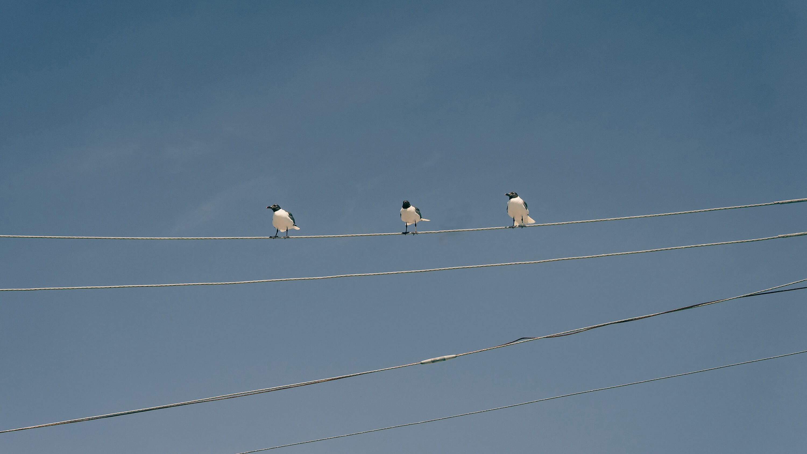

얼리 버즈 용어 사전
- EBS
- 일찍 일어나는 새들(Early Birds)의 약자. 2024년 12월부터 이어오고 있는 수진, 지수, 충근의 유쾌한 책 읽기 모임. 아침 10시에 온라인에서 만난다.
- EBS day
- 얼리버즈를 하는 날
- U know what . . .
- 얼리버즈 전 날 카톡방에 남겨지는 공포의 메세지. 보통 내일이 EBS day라는 소식이 이어진다.
- 지수진
- 지수와 수진의 합성어
- 보상 데이
- 한 달에 한 번 오프라인에서 만나 책을 읽는 날. 한 달의 성과를 자축하며 맛집을 찾아가는 전통으로 자리잡았다. 2025년 5월 현재까지 연남 도부(1월), 효창 파마자델리(2월), 성산 햇(3월), 서촌 시노라(4월)에 갔다.
- 조금 특별한 하루
- 3월 보상데이에 우연히 세인네 집 근처를 지나가다 창문으로 인사를 나눈 날. 그렇게 세인은 집을 나와 지수의 차를 타고 망원동 스몰커피를 가게 된다. 이어 영건과 진영까지 합류하며 사실상 충근과 가까운 친구가 한 자리에 모이는 대환장 모임이 되었다.
- 구름
- 충근의 화면에 때때로 보이는 흰 이불같은 환영
- 빌리
- 지수의 화면에 이따금 등장하는 요주의 턱시도 고양이
- 막내
- 지수와 충근이 종종 권위를 드러내고자할 때 수진을 일컫는 말
- 유하쌤
- 충근이 반년째 읽고 있는 책 21세기를 위한 21가지 제언의 저자 유발 하라리를 높여 부르는 말. 후속작 넥서스를 홍보하기 위해 홍진경의 유튜브 채널에 출연한 바 있다.
- Zixu Yi
- 지수리의 대체 자아(alter ego)
- Not a Dream
- 가사가 있는 노래를 좀처럼 듣지 않는 지수를 홀린 신성한 노래. 송소희 작사/작곡.
- 무경계
- 철학자 켄 윌버가 쓴 책. ‘내가 너고 너가 나’라는 큰 깨달음을 남겨 종종 회자된다.
- 컨디션 니엔조(Condition Nienzo)
- 2025년 상반기 잔병치레가 유독 잦은 충근의 상태
- 이거 어떻게 발음하는 줄 알아?
- 예상과 다른 영어 단어 발음을 소개해주는 충근의 영어 교실. 언젠가 유퀴즈에서 문제로 나올 것이라 믿는다.
- 아침 후 산책
- EBS 전 아침을 먹고 경의선 숲길을 걷는 충근의 돌발 행동. 몸 상태가 좋은 날 드물게 일어난다.
- 마음 채우기
- 채워도 채워도 채워지지 않는 공허함을 달래기 위해 선행해야할 숙제. 2025년 5월 현재 카톡방의 공지이다.
- 수진네 집들이
- 베일에 가려진 수진의 집을 공개하는 행사. 석사 청구전을 마치면 정말로 열릴지 귀추가 주목된다.
- 링크 실종 사태
- 지수의 탈퇴 발언 다음날 줌 링크가 사라진 사건. 충근은 큰 충격에 휩싸였지만 지수가 곧바로 링크를 다시 보내주면서 해프닝으로 마무리되었다. 의외로 지수는 버드콜에 출근해있었고 수진은 안 들어가진다며 늦게 접속했다.
- 모순
- 외모를 가꾸겠다고 노래를 부르는 충근은 정작 씻기도 귀찮아하고 오히려 아무 말 없는 지수진은 언제나 화장을 하는 상황
